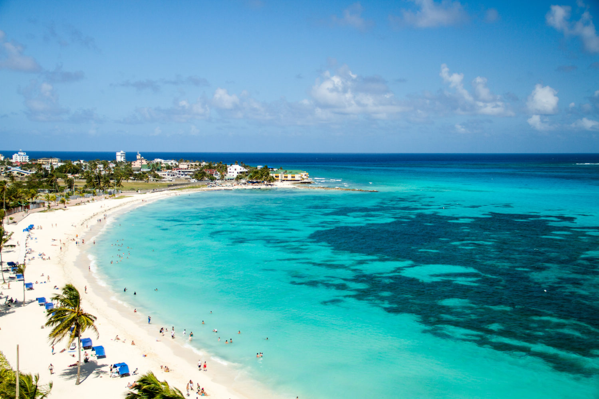
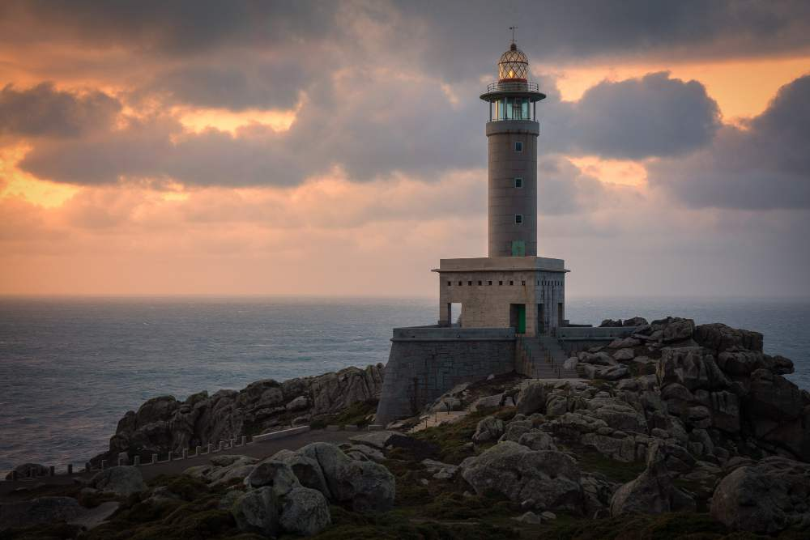
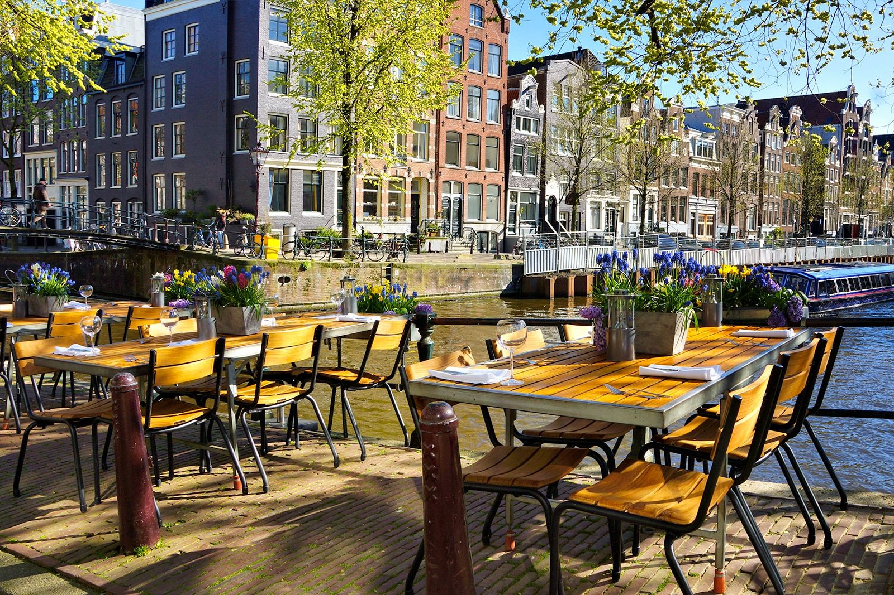
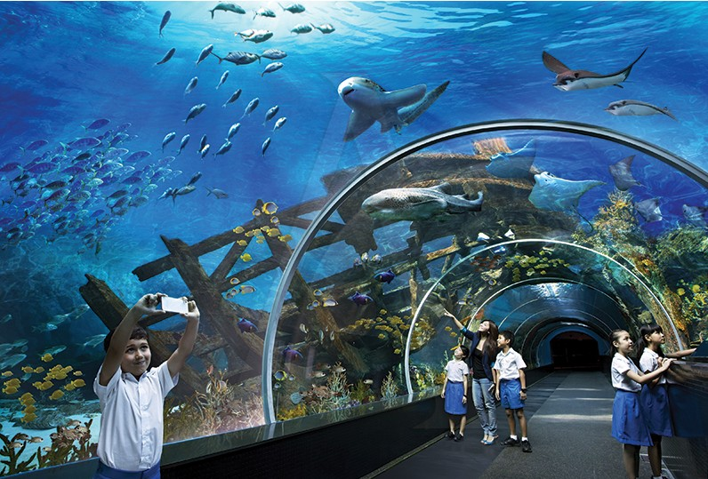
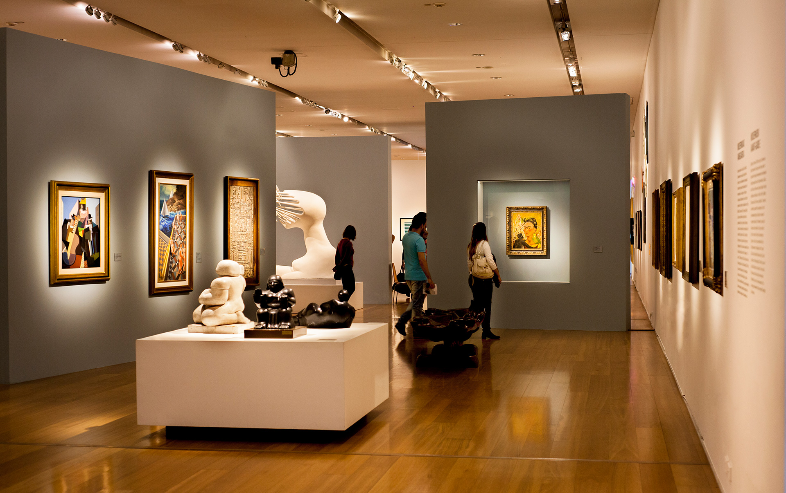
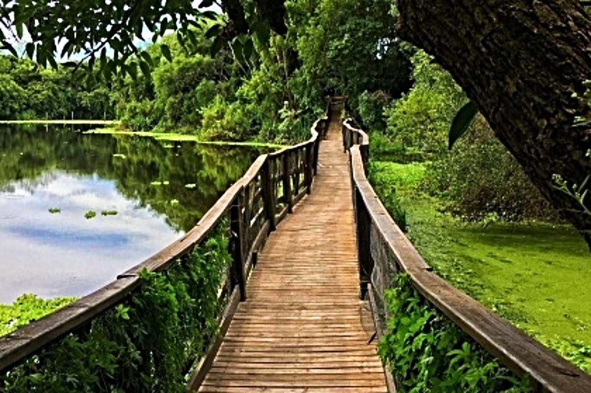
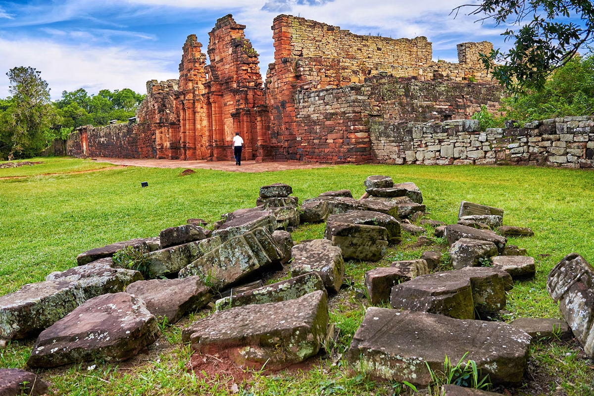
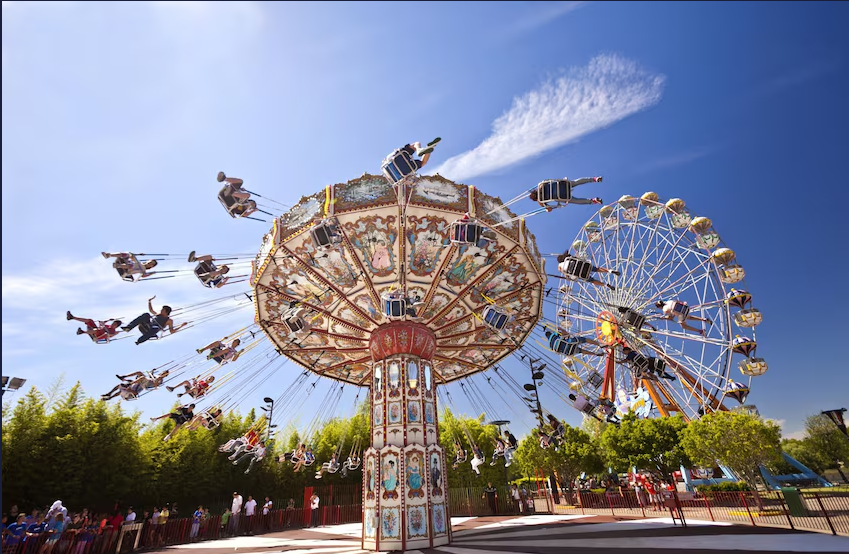
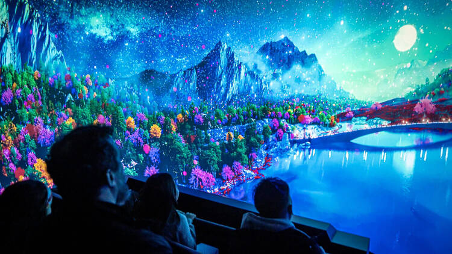
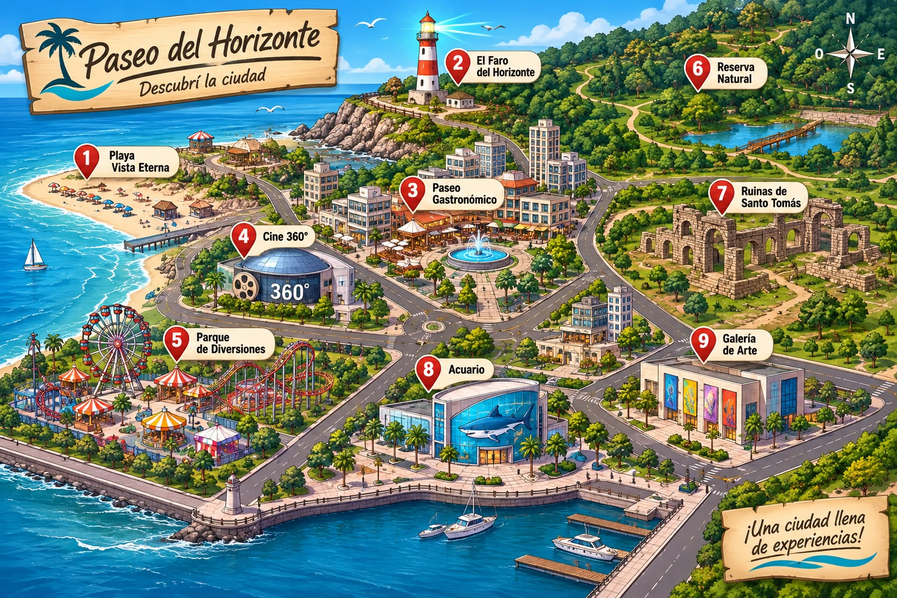

🏖️ Playa Vista Eterna
La playa principal de la ciudad, ideal para relajarse y disfrutar del atardecer.
Paseo del Horizonte cuenta con espacios únicos diseñados para el descanso, la aventura y el entretenimiento de toda la familia. No te pierdas nuestros puntos más destacados:

La playa principal de la ciudad, ideal para relajarse y disfrutar del atardecer.

Un mirador histórico con las mejores vistas panorámicas de la costa.

El centro de la ciudad donde encontrarás los mejores restaurantes y comidas locales.

Un espacio dedicado a la vida marina, donde podras encontrar diferentes especies de peces.

Lugar ideal para disfrutar de la creatividad y conocer el talento de nuestra ciudad.

Un entorno natural protegido, ideal para descubrir flora y fauna de la region.

Paseo guiado por las ruinas de Santo Tomas.

Diversion y aventura con juegos mecanicos y atracciones para todas las edades.

Una experiencia cinematografica inmersiva que te permitira ver peliculas panoramicas en 360 grados.
Descubrí los principales atractivos de Paseo del Horizonte.
